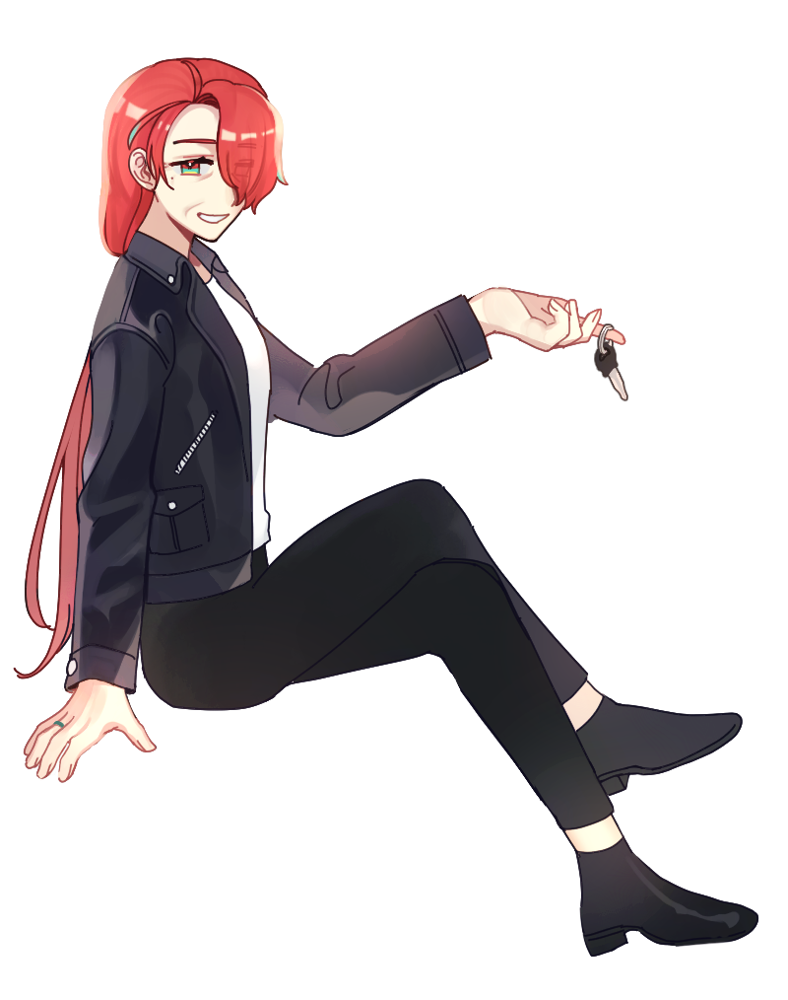

- 
-
이름복이성격- 붙임성 좋은 분위기 메이커 타입. - 시원시원한 성격에 누구에게나 친절하다. - 언뜻 몸이 먼저 나가는 것처럼 보이지만, 도전적인 성향이 강할 뿐이고 행동하기 전에 침착하게 생각하는 편이다. 호기심이 앞서던 예전보다는 그렇다.특징- 50대 중반에 키는 170 남짓. 평균 체중-1. - 구조대에서 은퇴하고 바다 앞에 지은 집에서 가족과 함께 시간을 보내고 있다. - 여전히 오토바이를 타고 다닌다. - 항상 손에 청록색 반지를 끼고 다닌다. 빼는 일이 거의 없어보인다. - 비록 가상세계에 존재하는 인공지능일지라도 현실세계의 사람과 다름없이 나이 들고 함께 살아간다. 자신과 같은 길을 걷기로 한 이곳의 신과 함께. - 구르트라는 이름의 남편이 있다. - 원, 유리아라는 이름의 쌍둥이 자녀가 있다. - 가장 좋아하는 꽃은 복수초.
ⓒ 2020 Site - Com / Illustration - AK